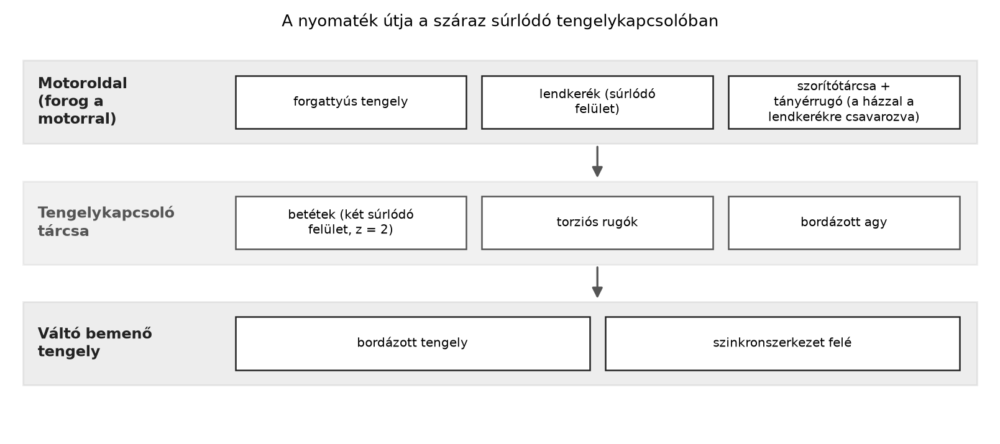

A műhelyben gyakori ügyfélpanasz: „emelkedőn a motor fordulatszáma felugrik, de a kocsi nem gyorsul”, vagy „nehéz váltani, rángat induláskor”. Ilyenkor a szerelő elsőként a tengelykapcsoló – műhelyi nevén kuplung – állapotát vizsgálja. A kuplung ugyanolyan kopó szerkezet, mint a fékbetét, csak éppen a motor forgatónyomatékát kapcsolja. Ha rosszul ítéljük meg a hibáját, feleslegesen szétszedhetjük a váltót, vagy éppen ellenkezőleg: elkopott tárcsával engedjük vissza az autót, amely pár ezer kilométerrel később újra cserére szorul. Ebben az alfejezetben a száraz súrlódó, a kettős tömegű lendkerekes és a hidrodinamikus tengelykapcsoló elvét tanuljuk meg úgy, hogy a hiba okát és a javítás lépéseit is megértsük.
Képzeljük el a motor lendkerekét, amely a forgattyús tengelyhez kapcsolódik, és a váltó felé néz. A lendkerék sík felületéhez nyomódik a tengelykapcsoló tárcsa, amelynek mindkét oldalán súrlódó betét van. A tárcsát a szorítótárcsa (nyomólap) szorítja a lendkerékhez; a szorítóerőt tányérrugó adja. A tárcsa agya a váltó bemenő tengelyének bordázatán csúszik, tehát a súrlódási nyomaték a tárcsán keresztül hajtja a váltót. A pedál lenyomásakor a kinyomócsapágy a tányérrugó belső nyelvére nyom, a rugó elengedi a szorítótárcsát, a súrlódó kapcsolat megszűnik, a motor és a váltó elválik egymástól.
Az alábbi rétegábra a legfontosabb részegységeket mutatja, felülről lefelé haladva a hajtás útján:

A rétegábra nem szerelési rajz, hanem a nyomaték útját mutatja: a lendkerék és a vele együtt forgó szorítótárcsa súrlódással hajtja a tárcsát, a tárcsa bordázott agya pedig közvetlenül a váltó bemenő tengelyét. A működtető elemek (pedál, fő- és munkahenger, kinyomóvilla, kinyomócsapágy) nyomatékot nem visznek, ezért nincsenek az ábra nyomatékútjában. A tényleges csavarkiosztást, a gyártói jelöléseket és a beépítési irányt mindig a gyártói javítási kézikönyv szerint kell ellenőrizni.
Definíció. A jármű tengelykapcsolója (clutch; „kuplung”) a motor és a hajtáslánc közé épített oldható, nyomatékátvivő kapcsolat, amely lehetővé teszi a motor járását álló járműnél, a nyomaték fokozatos felépítését induláskor, valamint a nyomatékváltó fokozatainak kapcsolását a motor forgatónyomatékának megszakításával.
Definíció. A száraz súrlódó tengelykapcsoló olyan kapcsoló, amely a nyomatékot súrlódó felületpárok súrlódási nyomatékával viszi át, hűtőfolyadék nélkül, levegőben. Személyautókban leggyakrabban egytárcsás, tányérrugós kivitelű.
Összefüggés. A száraz súrlódó tengelykapcsoló átvihető nyomatéka az alábbi képlettel számítható:
ahol:
Szabály. A tengelykapcsolót mindig nagyobb nyomatékra méretezik, mint a motor maximális nyomatéka. A gyakorlatban:
ahol a biztonsági tényező, jellemzően 1,3–1,8 közötti érték (ellenőrizendő: gyártói adat). Ha a kuplung ennél kevesebbet visz át, megcsúszik, ha viszont túlzottan erős, a hajtáslánc kapcsolása rángatós és a pedál indokolatlanul nehéz lesz.
A modern egytárcsás, tányérrugós kuplung fő részei:
Az energiafolyam: a motor forgatja a lendkereket, a lendkerék súrlódása a betéten keresztül viszi a nyomatékot a tárcsára, a tárcsa agya pedig a váltó bemenő tengelyét hajtja.
Az ábra (a) részén a tányérrugó külső pereme a szorítótárcsát a lendkerék felé nyomja, így a tárcsa két betétje két súrlódó felületen () kapja az szorítóerőt; a kinyomócsapágy és a nyelvek között az holtjáték látszik. A (b) részen a csapágy a nyelveket a motor felé nyomja, a rugó a billenőpontjain átbillen, a külső perem elengedi a szorítótárcsát, és a betétek mellett rés nyílik. A HTML-változatban a pedálút és a betétkopás csúszkájával követhető, hogyan csökken a szorítóerő és az átvihető nyomaték (az 1. példa adataival zárt állapotban 264,6 Nm), és hogyan fogy el a kopással a holtjáték.
A csavarrugós tengelykapcsoló régebbi személyautókban és nehéz haszongépjárművekben található. A szorítóerőt több, a szorítótárcsa hátoldalán egyenletesen elosztott tekercsrugó adja. Előnye a nagyobb állíthatóság, hátránya, hogy a kopással a rugóerő jobban csökken, és a szerkezet nagyobb, nehezebb (ellenőrizendő: gyártói kivitel).
A tányérrugós tengelykapcsoló egyszerűbb, könnyebb, olcsóbban gyártható, és a tányérrugó a súrlódó betét kopásakor is jobban megtartja a szorítóerőt. Ma személyautókban szinte kizárólag ezt alkalmazzák.
Nagy nyomatékú járműveknél, például tehergépkocsikban, kéttárcsás kivitelt használnak. Ilyenkor két súrlódó tárcsa és egy közbenső lemez van, így a súrlódó felületpárok száma . Ugyanakkora átmérővel közel kétszeres nyomaték vihető át, mint egytárcsásnál.
A lemezes tengelykapcsoló sok vékony lemezből áll, gyakran olajban fut, például motorkerékpárokban, motorsportban és egyes haszongépjárművekben. Előnye a kis szerkezeti méret, a lágy kapcsolás és az olajhűtés által elszállított hő. Személyautókban ritkábban találkozik vele a szerelő, de az automata váltók egyes belső tengelykapcsolói is lemezes kivitelűek.
A tengelykapcsoló tárcsa nem merev: a betét és az agy között torziós rugók vannak. Ezek a motor forgási egyenetlenségét, a hajtáslánc torziós lengéseit csillapítják, és lágyabb kapcsolást tesznek lehetővé. A modern tárcsákban a torziós rugók mellett kiegészítő súrlódó csillapító gyűrű is van, amely a rugók berezgését fékezi.
A betét anyaga hőálló, súrlódó kompozit. A régebbi betétek azbesztet is tartalmazhattak, ezért a por fújása tilos, a munkát porszűrő maszkban kell végezni (ellenőrizendő: a jármű korától függően). A betétkopás ellenőrzésekor a szegecsek süllyedését is mérni kell: ha a süllyedés a gyártói minimum alá csökken, a tárcsa cserés.
Az ábra felső része a tárcsa részeit mutatja: a súrlódó betéteket, a szegecseket (a szegecsfej mélysége a kopás mérési helye), a rugós betéthordozót, a torziós rugókat és a bordázott agyat, valamint a beépítési irányt. Az alsó rész a csere kulcsmozzanatát mutatja: a központosító tüske a főtengely vezetőcsapágyába és a tárcsa agyába illeszkedik, amíg a szorítótárcsa csavarjait átlósan, fokozatosan meghúzzuk; tüske nélkül a tárcsa elmozdul, és a váltó bemenő tengelye nem talál az agyba.
A mechanikus működtetés pedálból, bowdenhuzalból vagy rudazatból, kinyomóvillából és kinyomócsapágyból áll. A pedálon holtjátékot kell biztosítani: a pedál elején egy kis szabad út jelzi, hogy a kinyomócsapágy nem ér a tányérrugóhoz. Ha nincs holtjáték, a kinyomócsapágy folyamatosan forog, és a tányérrugót nyomja, ami kuplungcsúszást és csapágykopást okoz. A pontos pedál-holtjáték értéke járműtípusonként változik, ezért mindig a gyártói javítási adatot kell követni (ellenőrizendő).
A hidraulikus működtetésnél a pedál egy főfékhengerhez hasonlító főhengert mozgat, a fékfolyadék egy munkahengerbe jut, amely a kinyomóvillát vagy közvetlenül a kinyomócsapágyat működteti. A hidraulikus rendszer légtelenítése kötelező, és a fékfolyadék cseréjét a gyártói ütemterv szerint kell végezni (ellenőrizendő: gyártói adat). Sok modern rendszer önutánállító: a kopás miatt a kinyomócsapágy helyzete automatikusan utánáll, így a pedál holtjátéka állandó marad. Ha a rendszer szivárog vagy levegős, a kuplung „nem old ki”, azaz a váltó fokozatai nehezen kapcsolhatók.
Definíció. A kettős tömegű lendkerék (dual mass flywheel, DMF) olyan lendkerék, amely két tömegből áll: a primer oldal a motorhoz, a szekunder oldal a tengelykapcsolóhoz csatlakozik, a kettő között rugós–csillapító rendszer van, amely a motor torziós lengéseit elszigeteli a hajtásláncától.
A hagyományos lendkerék merev tömege a motor minden lökésszerű nyomatékát átadja a hajtásláncnak. A DMF ehelyett a primer és szekunder tömeg közötti ívrugókkal elnyeli a csúcslökéseket, csökkenti a váltó, a kardántengely és a hajtott kerék rezgését, emellett alacsonyabb fordulatszámon is lehetővé teszi a csendesebb járást (ellenőrizendő: gyártói tervezési elv).
A DMF jellemző hibái: kopogás, csattogás alapjáraton és leállításkor; rángatás induláskor; a szekunder tömeg túlzott szögholtjátéka; a belső kenőanyag kiszivárgása; az indítófogaskoszorú sérülése. A DMF általában nem újítható fel, cserélendő, ha a gyártói mérési határértéken túl van (ellenőrizendő: gyártói adat). Fontos, hogy DMF-es járműnél ne cseréljük a lendkereket hagyományos merev lendkerékre, mert a torziós lengések károsítják a hajtásláncot.
Definíció. A hidrodinamikus tengelykapcsoló (fluid coupling, Föttinger-tengelykapcsoló) olyan nyomatékátvivő, amelyben a hajtó és a hajtott oldal mechanikusan nem érintkezik; a nyomatékot folyadék áramlási energiája adja át.
A szerkezet két fő eleme a szivattyúkerék (hajtó oldal) és a turbinakerék (hajtott oldal). A szivattyúkerék felgyorsítja az olajat, az áramló olaj a turbinakerék lapátjaira hat, és nyomatékot ad le. Az átvitt nyomaték közel azonos a hajtó oldalon és a hajtott oldalon, de a turbina fordulatszáma kisebb, csúszás lép fel. A hatásfok:
A csúszás miatt a hidrodinamikus tengelykapcsolóban mindig van teljesítményveszteség:
Előnye a lágy indítás, a rezgéscsillapítás és az, hogy nincs kopó súrlódó betét. Hátránya a csúszásból származó hő, a kisebb hatásfok és az, hogy nem képes teljesen mechanikusan zárni. Modern automata váltókban gyakran reteszelő tengelykapcsolóval (TCC) egészítik ki, amely a hidrodinamikus csúszást a megfelelő üzemállapotban megszünteti; ez a későbbi Automata, kettős tengelykapcsolós és fokozatmentes váltók alfejezetben kerül részletesen tárgyalásra.
Adott: egytárcsás tengelykapcsoló, ; ; ; .
Keresett: a kuplunggal átvihető nyomaték .
Képlet:
Behelyettesítés:
Számítás:
Ellenőrzés: a nagyságrend reális; egy közepes személyautó kuplungja 300–500 Nm-t is átvihet, ez az érték egy gyengébb betéttel vagy csökkent szorítóerővel összhangban van. A mértékegység Nm, mert súrlódó nyomaték.
Adott: a motor maximális nyomatéka ; biztonsági tényező ; ; ; .
Keresett: a szükséges szorítóerő .
Képlet:
Először a szükséges átvihető nyomaték:
Ezután .
Behelyettesítés:
Ellenőrzés: a tányérrugós kuplung szorítóereje 5–8 kN nagyságrendű személyautóknál, így az eredmény elfogadható. Ha valaki a tényezőt elfelejtené, és -gyel számolna, akkor jönne ki, ami kétszeres, és indokolatlanul kemény pedálhoz vezetne. Ez a hiba a gyakorlatban ritkán fordul elő, de a számolásban tipikus ellenőrzési pont.
A tengelykapcsoló ellenőrzésekor a következőket mérjük, mindig a gyártói javítási adatokhoz viszonyítva (ellenőrizendő):
Előírás. A tengelykapcsoló tárcsáját, szorítótárcsáját és kinyomócsapágyát általában egységcsomagként, egymással összefüggő csereszettként kell cserélni, és a csavarokat a gyártói előírás szerint, sok esetben új rögzítőelemekkel, megadott nyomatékkal kell meghúzni (ellenőrizendő: gyártói javítási utasítás).
Egy dízel személyautó tulajdonosa azzal érkezik: „autópályán előzéskor a fordulatszám felszalad, de a sebesség nem követi, néha égett szag is van”. A tünet kuplungcsúszásra utal.
Tünet–hipotézis–mérés–ok–javítás lánc:
A tengelykapcsoló cseréje a hajtáslánc megbontásával jár, ezért az előkészítés a biztonságos munkavégzéshez elengedhetetlen. A teljes szerelési folyamatot a Tengelykapcsoló, nyomatékváltó és automata váltó szerelése, olajcsere alfejezet tárgyalja; itt az előkészítő lépéseket mutatjuk be.
Biztonsági korlát. A feladat tanműhelyi környezetre, oktató felügyeletére és a gyártói javítási utasítás betartására vonatkozik; a megadott értékek tanulási példák.
Gyakorlati lépések:
Figyelem. A tengelykapcsoló cseréje során a váltó és a futómű elemei nehézek; a szerszámokat, emelőket és alátámasztásokat a gyártó által előírt teherbírás szerint kell használni. A közös nyomásterű dízelrendszer vagy a benzin-üzemanyagrendszer megbontása nem szükséges, de ha a hidraulikus kuplung fékfolyadékkal dolgozik, a fékfolyadék a fényezést marja; a kiömlött folyadékot azonnal fel kell itatni.
Környezetvédelem. A leeresztett váltóolaj, a fékfolyadék és az olajos rongy veszélyes hulladék; gyűjtőedényben, szelektíven, a hulladékgazdálkodási előírások szerint kell kezelni (ellenőrizendő: hatályos hazai jogszabály).
A tényező elhagyása a számításban. Egytárcsás kuplungnál a tárcsa mindkét oldala súrlódik, ezért . Ha valaki -gyel számol, a szükséges szorítóerőt kétszeresére becsüli, és rosszul értelmezi a kopást vagy a pedálerőt.
Nincs holtjáték, és a kuplung csúszik. Mechanikus működtetésnél a pedálon nincs szabad út, ezért a kinyomócsapágy folyamatosan nyomja a tányérrugót. A szerelő a tárcsát cseréli, de a holtjátékot nem állítja be, így a hiba hamar visszatér.
A DMF cseréjének elmaradása. Ha a jármű DMF-es, és a lendkereket nem ellenőrzik, csak a kuplungot cserélik, a megmaradt kopott DMF rángatást és zajt okoz. Ugyanígy hiba a DMF-et merev lendkerékre cserélni, mert a hajtáslánc torziós igénybevétele megnő.
Hidraulikus kuplungnál levegő marad a rendszerben. A hidraulikus rendszer megbontása után a légtelenítés elmarad, vagy nem a gyártói sorrendben történik. A tünet: a kuplung nem old ki teljesen, a váltó fokozatai nehezen kapcsolhatók.
A lendkerék futófelületének elhanyagolása. A szerelő új tárcsát épít be repedt, hőkárosodott vagy barázdált lendkerékre. Az új tárcsa egyenetlenül kopik, rángatás és idő előtti meghibásodás lesz a következmény.
1. feladat (A) Sorold fel az egytárcsás, tányérrugós tengelykapcsoló hét fő elemét.
2. feladat (A) Határozd meg, mekkora szorítóerőre van szükség ahhoz, hogy az egytárcsás kuplung nyomatékot vigyen át, ha , , .
3. feladat (B) Egy motor maximális nyomatéka , a biztonsági tényező . Mekkora legyen az átvihető ? Ha a súrlódó felület közepes sugara és , , mekkora szorítóerő szükséges?
4. feladat (B) Rajzold le szövegesen vagy egyszerű vázlattal a száraz súrlódó kuplung erőfolyamát: motor, lendkerék, szorítótárcsa, tárcsa, bordázott agy, váltó bemenő tengely. Jelöld, hol keletkezik a súrlódási nyomaték.
5. feladat (C) Egy kuplungtárcsa betétvastagsága újkor 8,4 mm, a szerelő 6,1 mm-t mér. A gyártói kopási határ 7,0 mm. Értékeld, hogy cserés-e a tárcsa, és magyarázd el, mi történik, ha tovább használják.
6. feladat (D) Egy kézi váltós járműnél a kuplung nem old ki teljesen: a váltó fokozatai nehezen kapcsolhatók, és a kinyomócsapágy felől nyikorgó hang hallatszik. Sorold fel a lehetséges okokat és a sorrendet, ahogyan a hibát vizsgálnád.
Önellenőrzés – válaszok
1. feladat megoldása. A hét fő elem: lendkerék, tengelykapcsoló tárcsa, szorítótárcsa, tányérrugó, kinyomócsapágy, kinyomó villa, pedál/hidraulikus munkahenger. (A válaszban a bordázott agy is a tárcsa része.)
2. feladat megoldása. A képlet: .
3. feladat megoldása. A szükséges átvihető nyomaték: . A szorítóerő: .
4. feladat megoldása. A motor forgatja a lendkereket. A lendkerék és a szorítótárcsa közé szorul a tengelykapcsoló tárcsa; a súrlódási nyomaték a tárcsa mindkét oldalán keletkezik. A tárcsa agya bordázott, ezért a váltó bemenő tengelyét hajtja. A szorítótárcsát a tányérrugó nyomja, a kinyomócsapágy oldja a kapcsolatot.
5. feladat megoldása. A mért 6,1 mm kisebb, mint a 7,0 mm kopási határ, tehát a tárcsa cserés. Ha tovább használják, a betét tovább kopik, a szegecsek elérhetik a lendkerék vagy a szorítótárcsa felületét, azok megsérülnek, a kuplung csúszni fog, és a motor nyomatéka nem jut el a hajtott kerekekre.
6. feladat megoldása. Lehetséges okok: kevés fékfolyadék vagy levegős hidraulikus rendszer; hibás főhenger vagy munkahenger; kopott, törött kinyomó villa vagy kinyomócsapágy; a váltó bemenő tengelyének bordázata ragad; a tányérrugó törött. Vizsgálati sorrend: pedál út és holtjáték ellenőrzése, fékfolyadék szint és szivárgás, hidraulika légtelenítés, külső szerelés szemrevételezés, majd a váltó bontása után a kinyomócsapágy, villa, tányérrugó és bordázat ellenőrzése.
A száraz súrlódó tengelykapcsoló a motor és a váltó közötti oldható, súrlódó nyomatékátvivő kapcsolat. Az egytárcsás kuplung fő részei a lendkerék, a tengelykapcsoló tárcsa, a szorítótárcsa, a tányérrugó, a kinyomócsapágy és a működtető mechanizmus. A tárcsa mindkét oldala súrlódik, ezért ; a nyomaték . A tengelykapcsolót a motor maximális nyomatékánál nagyobb, -biztonsági tényezővel méretezik. A tányérrugós kivitel a szorítóerőt a kopás ellenére jobban tartja, mint a csavarrugós. A pedál holtjátéka biztosítja, hogy a kinyomócsapágy ne nyomja a tányérrugót alaphelyzetben; ha nincs holtjáték, a kuplung csúszik. A kettős tömegű lendkerék a primer és szekunder tömeg közötti rugózással csillapítja a motor torziós lengéseit. A hidrodinamikus tengelykapcsoló folyadék áramlásával viszi át a nyomatékot, csúszása miatt hatásfoka kisebb, de lágy indítást biztosít. Továbbvitt eredmény. A tengelykapcsoló oldásának és zárásának, a súrlódó nyomaték képletének, valamint a DMF feladatának ismerete közvetlenül használt a Kézi kapcsolású nyomatékváltók és a szinkronszerkezet alfejezetben a fokozatváltás megértéséhez, és a Tengelykapcsoló, nyomatékváltó és automata váltó szerelése, olajcsere gyakorlati útmutatóban a kuplungcsere lépéseihez.
Forrástípusok: gyártói javítási kézikönyvek és adatbázisok (tengelykapcsoló-alkatrészek, kopási határok, meghúzási nyomatékok), gépelem-tankönyvek (súrlódó tengelykapcsolók, hidrodinamikus hajtások). A hidrodinamikus tengelykapcsoló elve a Föttinger-féle fluid coupling klasszikus gépelem-tananyag.
Ellenőrizendő állítások: a példaként megadott súrlódási tényezők, közepes sugarak, szorítóerők, betétvastagságok, kopási határok és biztonsági tényezők; a pedál-holtjáték pontos értékei; a DMF mérési határértékei; a kuplungcsere során használt meghúzási nyomatékok és csereintervallumok; a hidrodinamikus tengelykapcsoló reteszelésének konkrét gyártói megoldásai.